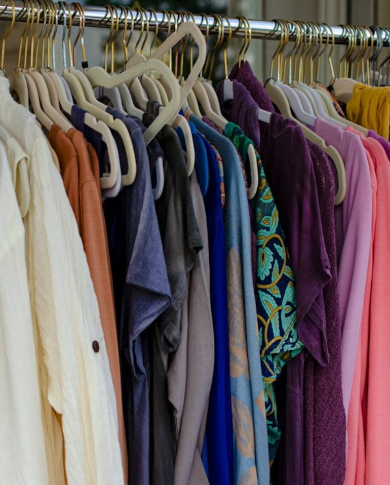
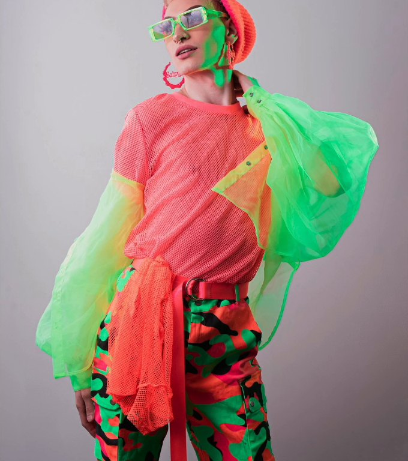

Goodstyle goeson.
The circular fashion issueEdition 11 / 26
We find exceptional vintage, extend its story, and make circular fashion feel like the only fashion worth wearing.
Give a piece. Pick a piece. Keep the story going.
Freshly found · this drop
The good
stuff.
Singular finds for singular people. Hand-picked, quality-checked, and ready for their next chapter.
See the whole dropHow it works
Wardrobe to
wardrobe.
Four steps. One longer life.
Give
Snap the front, back and label, tell us the size and any quirks, and drop it off.
Check
AI spots the obvious, then real humans run a hygiene and quality check. Only the good stuff gets through.
Tag
Each piece gets a ThreadForward tag with its own QR code, and a fair price, before it joins the drop.
Wear
Someone reserves it, pays at pick-up, and the story keeps going.
Why we exist
Fashion has
a future.
We're wearing it.
The most sustainable piece is the one that already exists. We rescue quality clothing from waste streams and put it back where it belongs: in wardrobes, on dance floors, and out in the world.
Read our circularity promise
The digital garment passport
Every piece
has a past.
We attach a ThreadForward tag to every piece we collect. Scan its QR code right here on the site and its whole record opens up: what it's made of, where it's been, and the water and waste you saved by wearing it again.
Our impact so far
Small choices.
Real change.
Based on estimated impact against the purchase of an equivalent new garment. How we count.
Upcycling workshops
Bring a piece.
Leave with a new one.
Learn what fast fashion really costs, then give something you own a glow-up with embroidery or patches. Keep it, or send it back into the cycle.

Keep the cycle moving
Get first
dibs.
New drops, thrift wisdom, and no greenwashing. Just the good stuff, occasionally.
By joining you agree to receive ThreadForward news. Unsubscribe anytime.